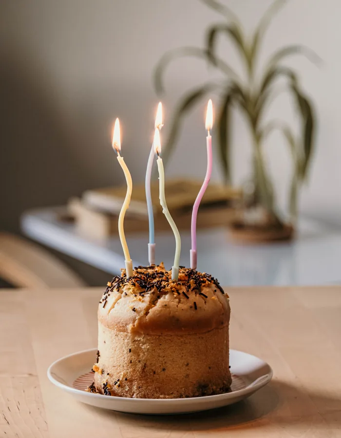

Ideas sencillas para preparar una celebración bonita sin agobios, con o sin grandes preparativos.
Organizar un cumpleaños infantil no tiene por qué significar preparar una fiesta enorme, llenar la casa de decoración o planificar cada minuto de la celebración. Lo más importante es crear un momento en el que el niño pueda disfrutar con las personas que quiere y sentirse protagonista de su día.
A veces, una celebración sencilla puede funcionar mejor que una fiesta llena de actividades. Lo importante es encontrar un equilibrio entre lo que le gusta al niño, el espacio disponible, el número de invitados y el tiempo que tiene la familia para prepararlo.
Antes de empezar a comprar o preparar cosas, puede ser útil pensar primero en cómo queremos que sea ese día.
No todos los niños disfrutan de la misma celebración.
A algunos les encanta estar rodeados de mucha gente, mientras que otros pueden sentirse más cómodos con un grupo pequeño.
Algunos disfrutan especialmente de los juegos y las actividades, mientras que otros prefieren hablar, disfrazarse, bailar, crear cosas o simplemente pasar tiempo con sus amigos.
Por eso, la primera pregunta no debería ser:
"¿Qué fiesta podemos organizar?"
sino:
"¿Qué tipo de celebración creemos que hará disfrutar al niño?"
También conviene tener en cuenta su edad, sus intereses y su forma habitual de relacionarse con otros niños.
Una celebración no tiene que seguir un modelo concreto para ser especial.
El número de invitados condiciona muchas otras decisiones.
No es lo mismo organizar una pequeña merienda con algunos amigos que una fiesta con toda la clase.
Antes de hacer la lista definitiva, conviene valorar:
Una celebración más grande no significa necesariamente una celebración mejor.
Elegir un número de invitados que la familia pueda gestionar cómodamente puede hacer que todos disfruten mucho más del momento.
Una fiesta infantil puede celebrarse prácticamente en cualquier lugar adecuado y seguro.
Puede resultar cómodo porque no hay que desplazarse y permite adaptar el espacio a las necesidades de la celebración.
La principal dificultad suele ser el espacio y la preparación posterior.
Un parque, jardín u otro espacio apropiado puede ofrecer más libertad de movimiento.
En este caso conviene tener siempre en cuenta el tiempo, las condiciones del lugar y las normas que correspondan.
Puede ser una opción interesante cuando la familia prefiere delegar parte de la organización.
Antes de reservar conviene comprobar qué incluye realmente el servicio, qué actividades se realizan, cuánto dura y qué aspectos debe aportar la familia.
No existe un lugar perfecto para todos los cumpleaños.
El mejor lugar es aquel que encaja con el número de invitados, la edad de los niños y lo que la familia quiere preparar.
Los temas pueden hacer que una celebración resulte especial, pero no son imprescindibles.
Si el niño tiene una afición concreta, puede ser una forma sencilla de dar personalidad al cumpleaños.
Puede ser algo tan sencillo como:
No hace falta que absolutamente todo siga el tema.
A veces basta con utilizarlo en algunos elementos de la decoración, la tarta, las invitaciones o alguna actividad.
Un tema debería servir para inspirar la celebración, no para complicarla.
Una fiesta infantil demasiado larga puede resultar agotadora tanto para los niños como para los adultos.
La duración adecuada dependerá de la edad, el lugar y el tipo de celebración.
Los niños pequeños suelen necesitar más pausas y momentos tranquilos.
Los mayores pueden mantener la atención durante actividades algo más largas, aunque también necesitan tiempo para jugar libremente.
En lugar de llenar todo el tiempo con actividades programadas, puede ser mejor combinar:
No hace falta controlar cada minuto.
Este es uno de los puntos más importantes.
Puede ser tentador preparar muchas actividades para evitar que los niños se aburran.
Pero una fiesta no necesita estar completamente dirigida.
Es suficiente con tener algunas ideas preparadas por si hacen falta.
Por ejemplo:
Si los niños están disfrutando de un juego que han inventado ellos mismos, no es necesario interrumpirlo para pasar a la siguiente actividad.
El juego libre también forma parte de la celebración.
Una actividad que funciona muy bien con niños de 3 años puede no interesar demasiado a uno de 8.
A la hora de preparar juegos, conviene pensar en:
Con niños pequeños pueden funcionar mejor actividades sencillas, cortas y con movimiento.
Con niños mayores pueden resultar interesantes los retos, las pistas, los juegos de estrategia, los proyectos creativos o las actividades por equipos.
No hace falta que todos los invitados tengan exactamente el mismo nivel.
La actividad debe permitir que todos puedan participar de alguna manera.
Si buscas ideas más concretas por edad, puedes consultar nuestras páginas por etapas.
Una celebración puede prepararse utilizando muchas cosas que ya tenemos en casa.
Para algunas actividades pueden servir:
Antes de comprar materiales nuevos, conviene revisar qué tenemos disponible.
Esto puede reducir el presupuesto y, además, permitir que los niños participen en parte de la preparación.
Preparar algo juntos también puede formar parte de la celebración.
Globos, guirnaldas, carteles, colores o algunos elementos relacionados con el tema elegido pueden ser suficientes para crear ambiente.
No es necesario decorar cada rincón.
Una buena opción puede ser elegir uno o dos elementos protagonistas y mantener el resto sencillo.
Además, conviene pensar en la seguridad de la decoración, especialmente cuando participan niños pequeños.
Los elementos que puedan romperse, desprenderse o presentar algún riesgo deben colocarse y utilizarse de manera adecuada.
La comida debe adaptarse a la edad de los invitados y a las necesidades concretas de cada celebración.
Puede ser útil comprobar previamente si alguno de los niños tiene alergias, intolerancias u otras necesidades alimentarias que la familia deba conocer.
No hace falta preparar una cantidad enorme de comida.
En muchas fiestas infantiles funcionan mejor opciones sencillas y fáciles de comer que una gran variedad de platos.
También puede ser útil separar un momento tranquilo para la merienda, en lugar de intentar que los niños coman mientras continúan jugando.
La tarta suele ser uno de los momentos más esperados del cumpleaños, pero no necesita convertirse en un proyecto complicado.
Puede ser casera, encargada, sencilla o estar relacionada con el tema elegido.
Lo importante es que forme parte de la celebración y que el niño disfrute del momento.
Si hay niños pequeños, conviene prestar atención a los elementos decorativos y retirar cualquier elemento que no sea adecuado para su edad.
No hace falta crear invitaciones complicadas.
Lo importante es que la información necesaria quede clara:
Cuando los invitados son pequeños, también puede ser útil indicar si necesitan ir acompañados por un adulto.
Dependiendo de la edad, algunos niños pueden necesitar que sus padres o cuidadores permanezcan durante la celebración.
Esto puede cambiar bastante la organización.
Conviene saber con antelación:
Una buena planificación también tiene en cuenta a quienes acompañan a los niños.
Los regalos forman parte de muchos cumpleaños, pero no tienen por qué ocupar todo el protagonismo.
Si el cumpleaños se celebra en casa, puede ser útil reservar un lugar donde colocar los regalos para evitar que terminen repartidos por toda la habitación.
También puede ser interesante hablar previamente con las familias si existe alguna preferencia concreta.
En algunos casos, cuando un niño ya tiene muchas cosas, la familia puede preferir un regalo compartido, una experiencia o simplemente reducir el número de regalos.
No existe una única forma correcta de hacerlo.
El cumpleaños es una celebración, no una competición por acumular regalos.
Si quieres más ideas para elegir mejor los regalos, puedes leer nuestro artículo sobre cómo comprar mejor para los niños.
Dependiendo del espacio disponible, puede resultar útil crear una zona claramente destinada a la celebración.
Puede ser una mesa para manualidades, una zona de juegos, un rincón para disfraces o simplemente un espacio libre donde puedan moverse.
Esto ayuda a que los niños identifiquen rápidamente dónde pueden realizar determinadas actividades.
No hace falta que sea una zona permanente.
Puede montarse únicamente durante la celebración.
Si quieres más ideas para organizar espacios en casa, puedes leer nuestro artículo sobre organización y hogar.
Incluso cuando todo está perfectamente organizado, algo puede cambiar.
Si la celebración es al aire libre, puede llover.
Una actividad puede no funcionar como esperabas.
Puede haber menos invitados de los previstos.
O los niños pueden decidir que prefieren hacer otra cosa.
Por eso conviene tener una o dos alternativas sencillas, pero sin preparar un programa completamente nuevo.
Un plan B puede ser simplemente:
La flexibilidad suele ser más útil que intentar controlar cada detalle.
En una fiesta hay estímulos constantes: personas, música, juegos, comida, conversaciones y actividades.
Especialmente en los niños más pequeños, puede ser útil disponer de un espacio algo más tranquilo.
No tiene que ser una habitación específica.
Puede ser simplemente una zona donde sentarse, leer, descansar o apartarse un momento del ruido.
Permitir pequeños momentos de pausa puede ayudar a que la celebración resulte más agradable.
Un cumpleaños no necesita un gran presupuesto para ser especial.
Algunas decisiones pueden ayudar:
Decide qué elementos son realmente importantes para el niño.
Decoraciones, recipientes y materiales de otras celebraciones pueden volver a utilizarse.
Guirnaldas, carteles y algunos elementos decorativos pueden prepararse con materiales sencillos.
No necesitas comprar materiales para diez juegos diferentes.
Una celebración en casa o en un espacio gratuito puede reducir considerablemente el coste.
Más decoración, más comida y más actividades no garantizan una celebración mejor.
A veces, una merienda sencilla, algunos amigos y tiempo para jugar son suficientes.
Puede ocurrir que una actividad no funcione.
Que la tarta no quede como esperabas.
Que llueva.
Que los niños prefieran jugar a otra cosa.
Que algunos invitados lleguen tarde.
Nada de eso significa que la celebración haya salido mal.
Los cumpleaños infantiles no son producciones profesionales.
Son momentos que los niños recordarán por haberlos compartido, no por si cada detalle salió exactamente según el plan.
Organizar un cumpleaños infantil consiste, sobre todo, en encontrar un equilibrio entre planificación y espontaneidad.
Puede ayudar:
No hace falta organizar la fiesta más grande, más decorada ni más original.
Una buena celebración es aquella en la que el niño puede sentirse protagonista, compartir tiempo con las personas que quiere y disfrutar de su día.
Y, muchas veces, eso es bastante más sencillo de lo que parece.